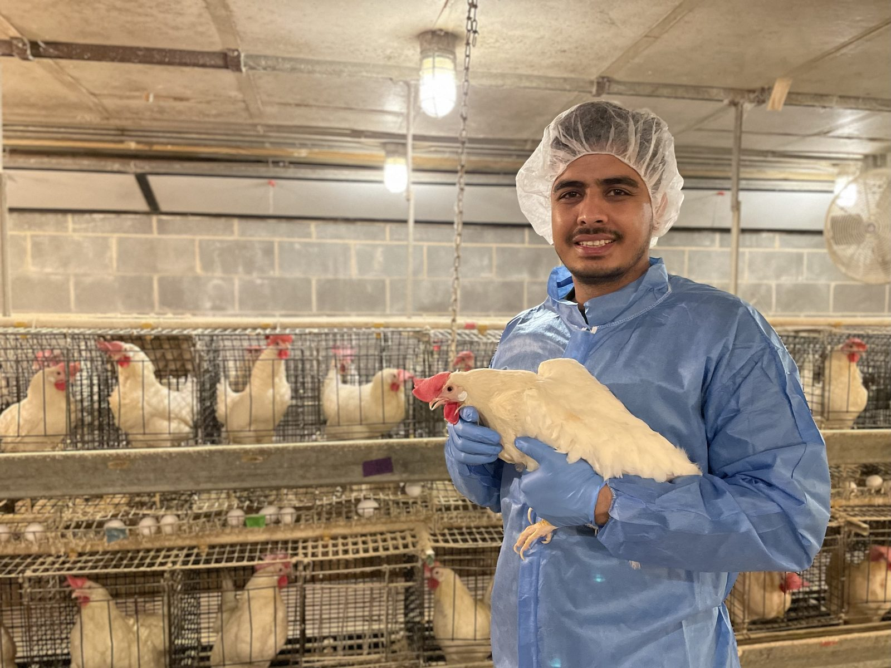
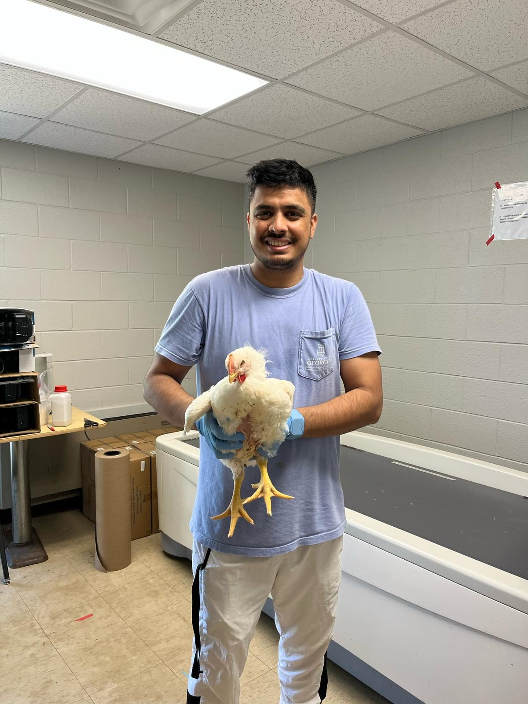
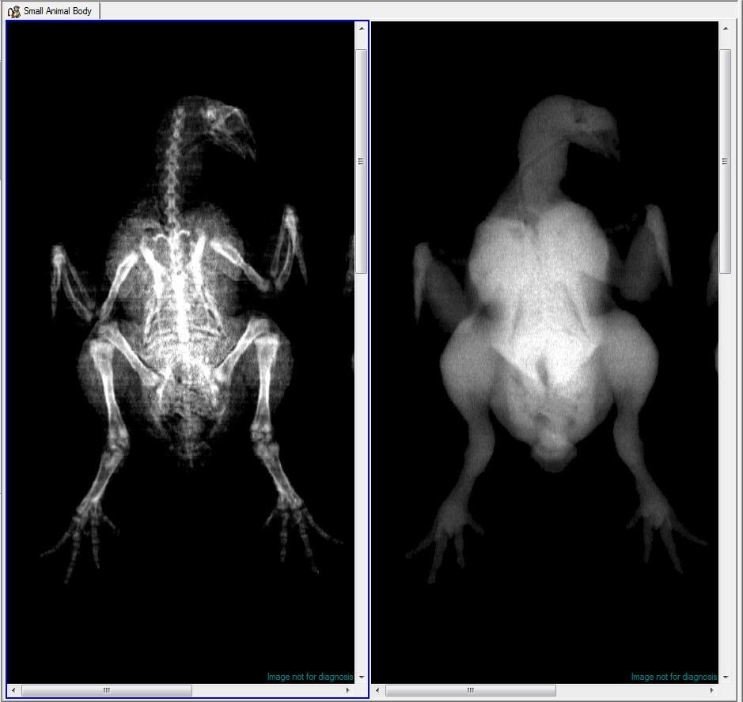
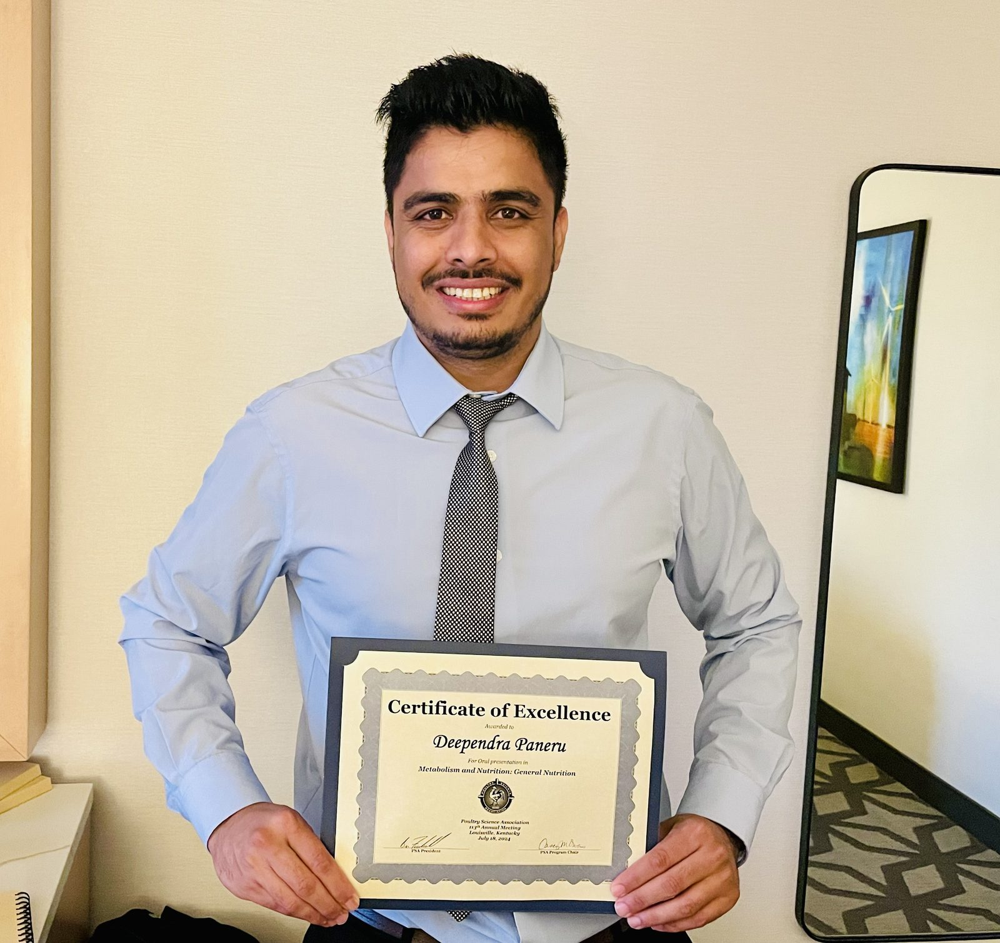
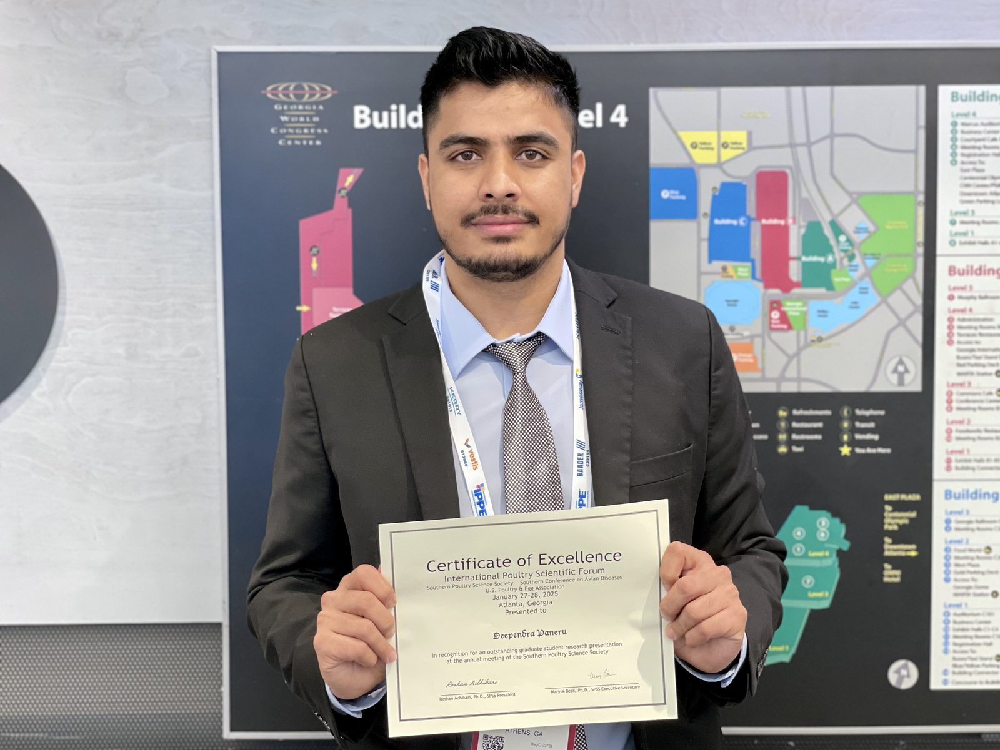

Where nutrition, health, and welfare meet.
I am a poultry scientist at the University of Georgia. My research connects nutrition, gut health, and physiology to the health, welfare, and resilience of poultry — work I do at the bench and in controlled challenge studies with laying hens and broilers.
I pair gut-permeability assays, qPCR, ELISA, and flow cytometry with DEXA and micro-CT imaging of bone and body composition, and I am extending this toward welfare and management questions in modern production.
Education

Areas of focus
From the intestinal barrier and the skeleton to the microbiome — with a growing focus on welfare and management.

Reading the skeleton, quantifying the bird.
DEXA and micro-CT let me measure bone mineralization, microarchitecture, and whole-body composition across nutritional and disease challenges.
Gut Health & Intestinal Integrity
Barrier function under dietary and pathogen stress.
Mycotoxicology
Deoxynivalenol and aflatoxin B1 on growth, gut, and bone.
Skeletal Biology & Body Composition
Bone and composition by DEXA and micro-CT.
Gut Microbiome
Cecal community shifts via QIIME2 and metagenomics.
Immunology
Immune response to enteric challenge by flow cytometry.
Health, Welfare & Management
Translating physiology into welfare and management.
In the lab & in the field
Research, conferences, and the people I work alongside. Tap any photo to enlarge.
Awards & service


Selected honors
Teaching & service
Peer-reviewed work
Let's connect
Department of Poultry Science · Athens, Georgia